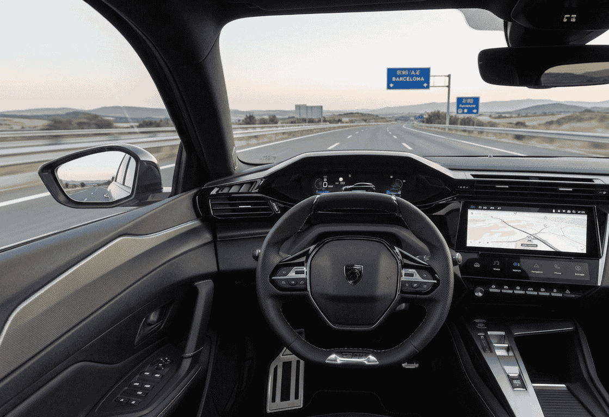

Hay coches eléctricos que intentan impresionar a base de cifras: más potencia, más velocidad de carga, pantallas más grandes. Y luego está el Peugeot E-308, que desde su lanzamiento ha apostado por una filosofía diferente: hacer las cosas bien antes que hacerlas llamativas. Con la actualización de 2026, Peugeot ha refinado esa propuesta y el resultado es uno de los compactos eléctricos más equilibrados del mercado europeo.
La pregunta que más escucho en torno a este modelo es siempre la misma: ¿merece la pena frente al Volkswagen ID.3, al Cupra Born o al Renault Mégane E-Tech? Vamos a verlo con datos reales y sin rodeos.
Qué cambia en el Peugeot E-308 2026
No estamos ante una nueva generación, sino ante un restyling significativo que Peugeot ha aprovechado para alinear el 308 con el resto de su gama renovada y añadir tecnología que hasta ahora faltaba.
Los cambios más relevantes, según confirman tanto km77 como Car News Hub, son:
- Nuevo frontal: diseño renovado que bebe directamente del lenguaje visual del E-3008 y el E-408, con una parrilla más integrada y una presencia más premium.
- Firma luminosa de tres garras LED: ahora más evolucionada y reconocible de noche.
- Software actualizado: interfaz más fluida y tiempos de respuesta mejorados en la pantalla central.
- Mayor autonomía homologada gracias a mejoras en la gestión térmica de la batería y la eficiencia del tren motriz.
- Plug & Charge: el vehículo se identifica automáticamente en cargadores compatibles sin necesidad de tarjeta ni aplicación.
- Vehicle-to-Load (V2L): permite alimentar dispositivos eléctricos externos directamente desde la batería del coche, con una potencia de hasta 3,7 kW.
- Nuevas opciones de conectividad: mejoras en el sistema de navegación y compatibilidad actualizada con smartphones.
💡 ¿Qué es el Vehicle-to-Load (V2L)?
Es una función que permite usar la batería del coche como fuente de energía para enchufar dispositivos externos: ordenadores portátiles, herramientas eléctricas, neveras portátiles o incluso electrodomésticos pequeños. Una característica que hasta hace poco era exclusiva de modelos como el Hyundai Ioniq 5 o el Kia EV6 y que ahora llega al segmento C.
Motor y batería
Peugeot ha mantenido la misma configuración técnica que ya conocíamos, algo que no es una crítica sino una confirmación de que la base ya era buena. Según los datos técnicos oficiales recogidos por km77:
⚙️ Ficha técnica del motor y batería
- Motor eléctrico: 156 CV (115 kW)
- Par motor: 270 Nm
- Tracción: delantera
- Batería bruta: 58,4 kWh
- Batería útil: 55,4 kWh
- Velocidad máxima: 150 km/h (limitada electrónicamente)
- Aceleración 0-100 km/h: aproximadamente 9,7 segundos
156 CV es una cifra modesta si la comparamos con algunos rivales, pero suficiente para un uso cotidiano ágil y confortable. El E-308 nunca ha pretendido competir en prestaciones con el Cupra Born de 231 CV: su argumento es otro, y lo veremos en el siguiente apartado.
Autonomía y consumo
Aquí es donde el Peugeot E-308 2026 da su mejor argumento. Según los datos oficiales publicados en la web de Peugeot España:
- Autonomía máxima homologada WLTP: hasta 450 km
- Consumo homologado: 14,9–15,0 kWh/100 km
Son cifras muy respetables para un compacto del segmento C. Para tener una referencia, el Volkswagen ID.3 con batería de 58 kWh ronda los 430 km WLTP, y el Renault Mégane E-Tech con batería grande alcanza los 450 km también. El E-308 está, por tanto, en la parte alta del segmento en eficiencia energética, lo que se traduce en menos paradas para recargar en viajes y una factura eléctrica más contenida en el día a día.
Como siempre, en conducción real las cifras serán inferiores dependiendo del ritmo de marcha, la climatología y el tipo de vía. Pero una autonomía práctica de 350-380 km en autopista a velocidad legal es perfectamente alcanzable según las pruebas de medios especializados como Autofácil.
Carga: AC, DC y tiempos
El sistema de carga del E-308 es funcional, aunque tiene un punto débil claro si lo comparamos con los rivales más modernos:
⚡ Datos de carga oficiales (Peugeot España)
- Carga en corriente alterna (AC): hasta 11 kW trifásica
- Carga rápida en corriente continua (DC): hasta 100 kW
- Tiempo de carga del 20% al 80%: aproximadamente 32 minutos
- Carga doméstica (Wallbox 7,4 kW): carga completa en aproximadamente 7-8 horas
Los 100 kW de carga DC son suficientes para el uso habitual, pero quedan algo por debajo de los 130 kW del Volkswagen ID.3 actualizado o los 150 kW del Cupra Born de nueva generación. En una parada en autopista, la diferencia entre cargar del 20% al 80% en 32 minutos frente a 26-28 minutos de un rival puede no ser determinante, pero es un dato a tener en cuenta si haces muchos viajes largos de forma frecuente.
Lo que sí es una adición bienvenida en 2026 es el Plug & Charge: conectas el cable y la autenticación y el pago se realizan solos en los cargadores compatibles. Una pequeña comodidad que marca la diferencia en el día a día de los viajeros frecuentes. Si quieres saber más sobre cómo optimizar la carga de tu eléctrico en casa, te lo explico en detalle en esta guía.
Diseño exterior
El diseño ha sido siempre uno de los argumentos más sólidos del 308, y la versión eléctrica 2026 lo refuerza. Con el restyling, Peugeot ha actualizado el frontal para incorporar la nueva identidad visual de la marca: parrilla integrada del color de la carrocería, nueva firma luminosa de tres garras LED y una silueta que sigue siendo más cercana a una berlina de líneas deportivas que a un típico compacto familiar.
El resultado es un coche que visualmente juega en una liga por encima de su precio. En un aparcamiento llama más la atención que un ID.3 o un Mégane E-Tech, y eso para muchos compradores es un factor de peso.

El i-Cockpit del E-308 2026 con cuadro digital y pantalla central de 10". Los materiales y el acabado siguen siendo uno de sus puntos fuertes. Fuente: Peugeot España.
Interior y tecnología
El interior es, junto a la eficiencia, el otro gran argumento del E-308. Peugeot mantiene su conocido i-Cockpit, con volante compacto de corte plano en la parte inferior, cuadro de instrumentos digital de visión elevada y pantalla táctil central de 10 pulgadas con el software actualizado en esta versión 2026. Según el análisis de Caetano, la compatibilidad inalámbrica con Android Auto y Apple CarPlay está disponible de serie en los acabados principales.
Los materiales son otro punto a favor: el nivel de acabado interior supera con claridad a varios rivales de origen asiático que compiten en precio. La sensación de calidad al tacto y los detalles de diseño del salpicadero sitúan al E-308 en un segmento perceptivo superior al que le correspondería por precio.
El espacio para los pasajeros delanteros es amplio y confortable. En las plazas traseras el espacio es correcto para dos personas adultas, aunque sin ser generoso. Es uno de los compromisos habituales de los compactos de líneas deportivas: ganar atractivo visual a costa de algo de habitabilidad trasera.
Precio en España
Según la información recogida en carwow.es y Caetano, el Peugeot E-308 2026 parte de aproximadamente 38.500 € en España según el acabado elegido. Con las promociones comerciales habituales y financiación de Peugeot Financial Services, el precio de acceso puede situarse en torno a los 36.000-36.920 €.
💰 Precios orientativos Peugeot E-308 2026 en España
- • Acabado Allure: desde ~36.500 €
- • Acabado GT: desde ~38.500 €
- • Con financiación y promociones: desde ~36.000 €
Precios orientativos a julio de 2026. Consulta con tu concesionario oficial para condiciones actualizadas. Si hubiera ayudas del Plan MOVES vigentes, el precio podría reducirse adicionalmente.
Lo mejor y lo menos positivo
✅ Lo mejor
- ✓ Hasta 450 km de autonomía WLTP
- ✓ Consumo muy eficiente (14,9 kWh/100 km)
- ✓ Diseño exterior muy atractivo y diferenciador
- ✓ Calidad interior por encima de la media del segmento
- ✓ Plug & Charge y V2L como novedades relevantes
- ✓ Carga AC trifásica de 11 kW de serie
- ✓ Comportamiento equilibrado y refinado
⚠️ Lo menos positivo
- ✗ Carga DC máxima de 100 kW, inferior a algunos rivales
- ✗ Maletero de 361 litros, algo justo frente a SUV del segmento
- ✗ Plazas traseras correctas pero sin destacar en espacio
- ✗ 156 CV son modestos para quienes buscan mayor dinamismo
- ✗ Precio de acceso elevado frente a alternativas chinas como el MG4
Rivales: ¿con quién compite?
La pregunta clave: ¿merece la pena el E-308 frente a sus competidores directos? Aquí un resumen honesto de cómo se posiciona en los puntos más importantes:
🏁 Comparativa rápida con los principales rivales
| Modelo | Autonomía WLTP | Carga DC | Precio desde |
|---|---|---|---|
| Peugeot E-308 2026 | 450 km | 100 kW | ~36.500 € |
| Volkswagen ID.3 (58 kWh) | ~430 km | 130 kW | ~36.000 € |
| Cupra Born (58 kWh) | ~420 km | 150 kW | ~37.000 € |
| Renault Mégane E-Tech (60 kWh) | ~450 km | 130 kW | ~36.000 € |
| MG4 Electric (64 kWh) | ~435 km | 140 kW | ~28.000 € |
| BYD Dolphin (60,4 kWh) | ~427 km | 88 kW | ~27.000 € |
Datos orientativos a julio de 2026. Fuentes: webs oficiales de cada fabricante y km77.
El panorama es claro: en autonomía, el E-308 está a la par o por delante de los mejores del segmento. En carga DC, queda por detrás del ID.3, el Cupra Born y el Mégane. En precio, está en línea con los europeos pero significativamente por encima del MG4 y el BYD Dolphin. Su ventaja diferencial está en el conjunto: diseño, calidad interior, eficiencia y equilibrio general.
El Opel Astra Electric, que comparte plataforma Stellantis con el E-308, es otro rival a considerar para quien quiera comparar alternativas dentro del mismo grupo industrial.
Mi opinión
El Peugeot E-308 nunca ha pretendido ser el eléctrico con mayor potencia ni el que carga más rápido. Su apuesta es otra y, con el restyling de 2026, la ejecuta mejor que nunca: ofrecer un compacto bien construido, eficiente, atractivo y agradable de conducir.
En un mercado donde muchos fabricantes compiten a base de cifras espectaculares en papel, Peugeot ha preferido perfeccionar una receta más equilibrada. Las novedades de esta versión, especialmente el V2L y el Plug & Charge, demuestran que la marca escucha lo que pide el mercado europeo, aunque sin renunciar a su identidad.
Para quien valore el diseño, la calidad percibida del interior, una autonomía más que suficiente para el día a día y un consumo contenido que se nota en la factura de la luz, el E-308 sigue siendo una de las opciones más interesantes del segmento C eléctrico. Si en cambio priorizas la velocidad de carga en viajes largos o buscas el precio más ajustado posible, las alternativas chinas o el ID.3 con carga de 130 kW pueden encajar mejor.
Lo que está claro es que el E-308 2026 no da un paso atrás en nada y da varios pasos adelante en lo que importa: autonomía, tecnología de carga y conectividad. Suficiente para mantenerse como referencia en un segmento muy competido.
Preguntas frecuentes sobre el Peugeot E-308 2026
FAQ – Peugeot E-308 2026
🔹 ¿Cuánta autonomía tiene el Peugeot E-308 2026?
El Peugeot E-308 2026 tiene una autonomía homologada de hasta 450 km según el ciclo WLTP, con un consumo de 14,9–15,0 kWh/100 km. Son cifras muy competitivas dentro del segmento C de compactos eléctricos, situándolo en la parte alta del mercado en eficiencia energética. En conducción real, en función del ritmo de marcha y las condiciones climatológicas, la autonomía práctica en autopista puede situarse en torno a los 350-380 km. Fuente: Peugeot España.
🔹 ¿Cuánto cuesta el Peugeot E-308 2026 en España?
El precio del Peugeot E-308 2026 en España parte de aproximadamente 36.500 € en el acabado de acceso y puede superar los 38.500 € en las versiones GT con mayor equipamiento. Con las promociones comerciales habituales y financiación de Peugeot Financial Services, el precio efectivo puede situarse por debajo de los 37.000 €. Consulta siempre con el concesionario oficial para conocer las condiciones vigentes. Fuentes: carwow.es y Caetano.
🔹 ¿Qué novedades trae el Peugeot E-308 2026?
Las principales novedades del E-308 2026 son: nuevo frontal con la identidad visual actualizada de Peugeot, software de infoentretenimiento renovado, mejoras en eficiencia que se traducen en mayor autonomía, Plug & Charge (autenticación automática en cargadores compatibles) y Vehicle-to-Load (V2L) para alimentar dispositivos eléctricos externos desde la batería del coche. Fuentes: Car News Hub y km77.
🔹 ¿Cuánto tarda en cargarse el Peugeot E-308 2026?
El Peugeot E-308 2026 admite carga en corriente alterna (AC) de hasta 11 kW trifásica y carga rápida en corriente continua (DC) de hasta 100 kW. El tiempo de carga del 20% al 80% en un cargador rápido es de aproximadamente 32 minutos. La carga completa desde una Wallbox doméstica de 7,4 kW tarda unas 7-8 horas, lo que permite tener el coche cargado a la mañana siguiente cómodamente. Fuente: Peugeot España.
Fuentes consultadas
- Peugeot España – Página oficial del E-308 eléctrico
- km77 – Peugeot 308 2026: nuevo frontal y más autonomía
- km77 – Ficha técnica completa Peugeot E-308 2026
- Autofácil – Prueba y opinión del Peugeot E-308 2026
- carwow.es – Precio y valoración del Peugeot E-308 2026
- Caetano – Peugeot E-308 precio y equipamiento en España
- Car News Hub – Peugeot 308 2026: precios, motores y equipamientos